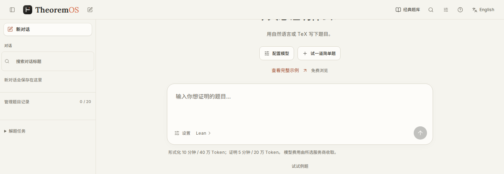
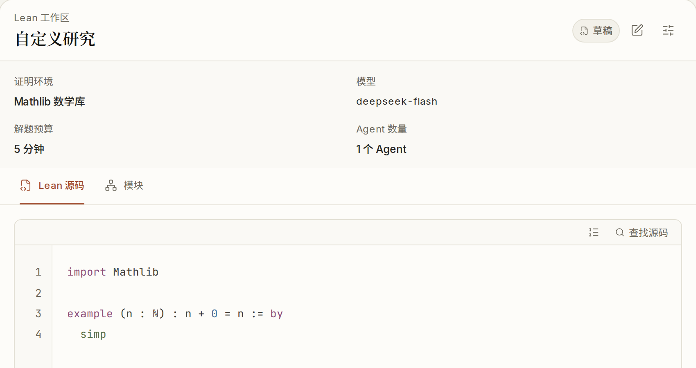
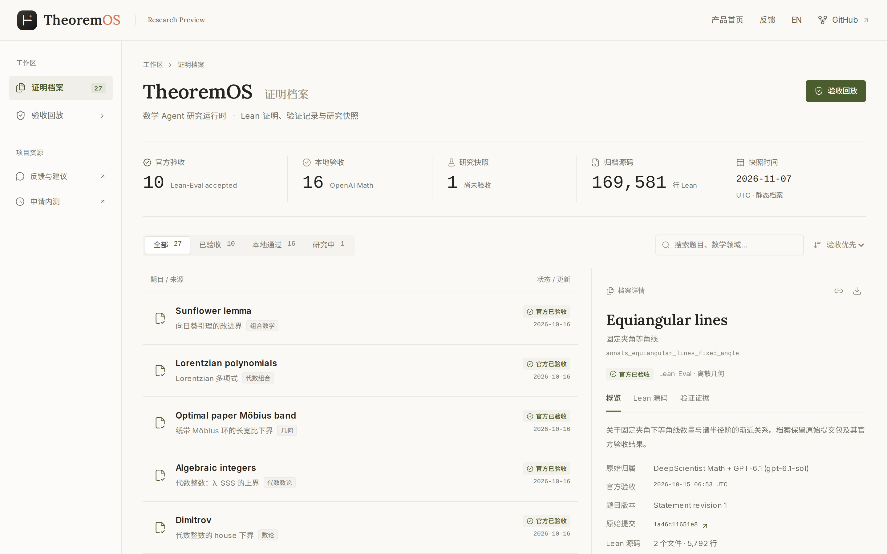

Mathematics researchers
Write the full hypotheses and goal in natural language or TeX, then check that the Lean statement captures your meaning. Follow proof attempts, download source and verification materials, and continue from what remains open.
From a problem to a Lean proof.
Natural-language input. Independent Lean checks. Allowlist beta; bring your API key.

Start in natural language or TeX, inspect how the models understand the problem, then follow proof construction and Lean acceptance.
Work in your browser without installing Lean or Docker. Statement meaning review and proof acceptance are shown separately.
Write the full hypotheses and goal in natural language or TeX, then check that the Lean statement captures your meaning. Follow proof attempts, download source and verification materials, and continue from what remains open.
Start from a Lean theorem or a candidate containing sorry and inspect diagnostics and missing lemmas. To study search, context or collaboration methods, hold the problem, model and budget fixed and compare the recorded attempts.
The beta platform is free; your provider bills model calls. Defaults: 10 minutes / 400,000 tokens for formalization, then 5 minutes / 200,000 tokens for proof. Adjust both before sending. Work stops on reported usage; requests in progress may exceed the cap. Token budgets are not monetary caps.
How API keys are handledFollow a preset addition-by-zero example through Lean feedback and repair. No account or API key needed; no models are called.
See the full replay recordnamespace Tutorialtheorem add_zero (n : Nat) : n + 0 = n := by rfltheorem zero_add (n : Nat) : 0 + n = n := by rflend Tutorialadd_zero closes with rfl;zero_add needs an existing lemma.
n : Nat
⊢ 0 + n = nThe next candidate uses Nat.zero_add n.
namespace Tutorialtheorem add_zero (n : Nat) : n + 0 = n := by rfltheorem zero_add (n : Nat) : 0 + n = n := by exact Nat.zero_add nend Tutorialnamespace Tutorialtheorem add_zero (n : Nat) : n + 0 = n := by rfltheorem zero_add (n : Nat) : 0 + n = n := by exact Nat.zero_add nend Tutorial| Problem and original research record | Area | Verification and evidence |
|---|---|---|
Sunflower lemmaImproved bounds for the sunflower lemma DeepScientist Math + GPT-6.1 (gpt-6.1-sol) |
Combinatorics | Official pass |
Lorentzian polynomialsClosure of strictly Lorentzian polynomials DeepScientist Math + GPT-6.1 (gpt-6.1-sol) |
Algebraic combinatorics | Official pass |
Optimal paper Möbius bandAn aspect-ratio bound for paper Möbius bands DeepScientist Math + GPT-6.1 (gpt-6.1-sol) |
Geometry | Official pass |
Algebraic integersAn upper bound for λ_SSS DeepScientist Math + GPT-6.1 (gpt-6.1-sol) |
Algebraic number theory | Official pass |
DimitrovA lower bound for the house of algebraic integers DeepScientist Math + GPT-6.1 (gpt-6.1-sol) |
Number theory | Official pass |
Hopf–RinowGeodesic and metric completeness DeepScientist Math + GPT-6.1 (gpt-6.1-sol) |
Riemannian geometry | Official pass |
Fractional expectation thresholdsThreshold bounds for up-closed families DeepScientist Math + GPT-6.1 (gpt-6.1-sol) |
Probabilistic combinatorics | Official pass |
Equiangular linesEquiangular lines with a fixed angle DeepScientist Math + GPT-6.1 (gpt-6.1-sol) |
Discrete geometry | Official pass |
Rademacher & Enflo typeRademacher type and Enflo type coincide DeepScientist Math + GPT-6.1 (gpt-6.1-sol) |
Functional analysis | Official pass |
Unit conjectureA nontrivial unit in a group ring DeepScientist + GPT-5.6 |
Algebra | Official pass |
OpenAI Math: 16 locally verified solutions and research processes
These results come from the predecessors DeepScientist and DeepScientist Math and from later work, including resumed runs and environment migrations. Each archive record lists the original attribution, the official result and the source.
Fix the statement, environment, model and budget, then swap one kind of research decision. Five research components support single-agent and multi-agent comparisons.
Picks ready tasks and decides whether to continue, retry or stop. Study task ordering together with route and budget constraints.
M3 · Search
The natural-language entry, advanced Lean workspace and proof archive are real interface views. Unsubmitted previews and accepted records are labeled separately. The workbench supports Chinese and English.
Open the proof archive
Pick the Lean standard library or a fixed Mathlib environment, then check candidates and diagnostics in the workspace on the right. This screenshot shows an unsubmitted draft.
Download the Lean source and the verification report. Sign in with an email code; run records belong to your account.
Request accessCandidates, diagnostics and total usage are saved, so you can review a study afterwards.
Browse the proof archiveChoose OpenAI or a configured gateway and use that provider’s key. The natural-language entry keeps it only in page memory; advanced mode can save it encrypted to your account.

The online workbench is an allowlist beta. Tell us your research use; a public problem or Lean link is optional.
The beta platform is free. Run with your own model API key.
GitHub requests are public. Do not include API keys, email addresses or other personal information. Without GitHub, or to apply privately, email liuzhenhao@westlake.edu.cn.
Describe your research use in a GitHub access request; a public problem or Lean link is optional. We reply in the same issue with instructions for confirming your sign-in email privately. Once approved and added to the allowlist, sign in at app.theoremos.top with an email code. Issues are public: keep API keys and personal contact details out of them. You can also email us privately to apply.
It serves mathematics researchers, Lean users and math agent researchers: translating problems into inspectable Lean statements, constructing proofs and reviewing the process. This limited beta does not promise to solve every problem.
Yes. The online workbench at app.theoremos.top is still an allowlist beta. After signing in, enter natural language, TeX or an existing Lean statement, select a model, and follow the process and acceptance result. Without access, explore the interface previews, recorded replay and proof archive here.
Select a provider in the workbench. OpenAI users can create a key in its console; gateway accounts and keys, including Sub2API, come from that gateway’s administrator. Keys are not interchangeable. “Check key and model” only reads the model list, without calling a model; tasks are billed by your provider. Replays here need no key.
Records belong to your account and can be downloaded. The natural-language entry keeps a key only in page memory; advanced mode can save it encrypted to your account, where you can remove it. Deleting your account clears live content immediately. For maintenance backup and current-window usage retention, see Privacy and terms.